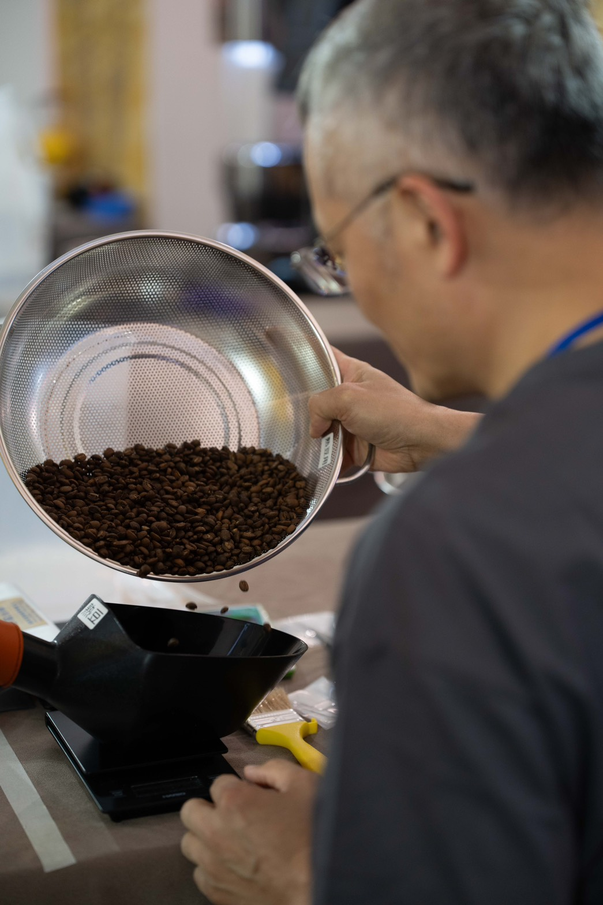

我們的故事
從樂音到咖啡香，始於一份純粹的熱愛
23 年前的今天，樂海樂器正式開幕，那是我們對聲音藝術的初心。一路走來，我們陪伴無數樂友選琴、修琴，更一起分享著對美好樂音的熱愛與執著。
☕ 2021 年，一場突如其來的疫情三級警戒，讓我心中湧現了不安。就在那段幾乎與世隔絕的日子裡，我卻意外地一頭栽進了咖啡烘焙的奇妙世界。咖啡的醇厚香氣，彷彿成了另一種心靈的安定劑與創意的泉源。
2024 年，我榮幸地參加烘豆比賽並獲得獎項，這份肯定更加堅定了我走上「雙品牌職人之路」的決心。從揚琴工坊的精湛細膩手工，到精品咖啡豆的精準火候掌控，我始終堅信——聲音與風味，都是值得我們傾注心血、用心雕琢的藝術。
我們的品牌故事影片
幕後職人

創辦人 / 首席烘豆師
陳師傅
擁有超過20年的樂器製作工藝背景，將對精準與和諧的追求，完美轉化為對咖啡烘焙的熱情。對他而言，每一條烘焙曲線，都像是在譜寫一首動人的樂曲。
由陳師傅親自烘培，確保每一顆豆子都能展現其最佳風味。